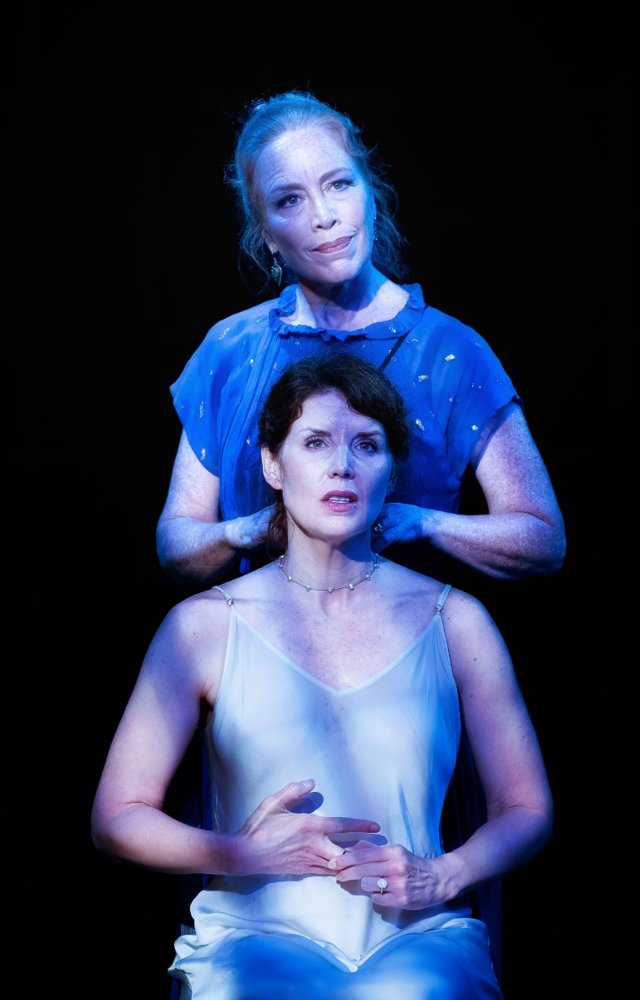

Othello
Assistant Director · Directed by Rosie Ward
This show features a minimalistic set, a fast pace, and a focus on ensemble. As the AD, my main role is to work with the actors on clarifying the language and building foundational character work.
Media Coverage
